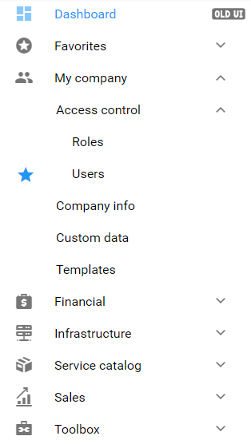

Access Control
Adding Users
It is not recommended to use the default Root user, for any operation other than initial setup.
1. Left on the navigation menu, select My comapny, then Access control, and click Users.
2. Create user panel, is used to fill in the following user details:
- Login - Type the username that will be used by this user when they log in to the admin interface.
- Email - The email contact to be used for this user. The user will recieve notifications for which they are subscribed via this email.
- Password - Type the password for this user, or create a password using the 'Generate Password' option provided. It should be noted that upon first login to the interface the user will be prompted to change their password.
- Role- Select the roll applied for this user.
3. Once all the user information was updated, select Save.
Access Levels and Roles
Access Levels
Access Levels are available from the old user interface, and can be accessed on the left panel, next to 'Dashboard'. Different type of users will have different responsibilities within the billing system. In some cases certain portions of the system needs to be restricted for users to see. Roles allow the administrator to decide what a user, for example, can see and edit, or create. You can use default ACLs defined in PortaBilling, or create new ones to fit your needs.
Access Level Types
An access level conisists of the followng types:
- Account - to be applied to your account
- CC Staff - to be applied to your customer care support employees
- Component - cannot be assigned to users; used only to construct other access levels
- Customer - applied to retail customers or subcustomers
- Distributor - applied to your distributor
- Representative - applied to your representative
- Reseller - applied to your resellers
- User - access level for users of the admin interface
- Vendor - applied to your vendors
Add / Edit a new user ACL
Should you find that a predefined user ACL offer too many, or too few restrictions for a class of user, you might have to create a new user ACL. The easiest method to create a new access level, is to take an existing access levle and modify it according to need. Each model access level, are granted certain permissions which should be examined when creating a new access level model. Creating a new access level:
1. On the Access Level Management page, click Add.
2. On the New Access Level page, specify the following information:
- Name - Type the custom name for this ACL
- Type - Select the entity this ACL will be applied to
- Componets tab - Define the components that will be included in this ACL, and in which order by using the Include, Remove, Up and Down buttons.
Note: Each access level may have zero or more dependent components, which are ordered and applied in order until the first matching permission is reached. The sequence of components matching is held top-down:
Role-based access control
An administrators can use the role-based security system to control user access, along with the ACL security system, ensuring that a user can only access those resources authorized to see or use.
Accessible from the new GUI, the role-based security system exists in parralel with the ACL one.

Roles
Default roles are supplied, or new roles can be created by administrators:
- Account - to be applied to your account
- CC Staff - to be applied to your customer care support employees
- Component - cannot be assigned to users; used only to construct other access levels
- Customer - applied to retail customers or subcustomers
- Distributor - applied to your distributor
- Representative - applied to your representative
- Reseller - applied to your resellers
- Admin - access level for users of the admin interface
- Vendor - applied to your vendors
Admin, Account and Customer role types are available. Support for other role types will be implemented in subsequent releases.
As a resource tree presented on the webinterface, roles are presented as root nodes reflecting entities. Second-level nodes reflect entity parameter panels.
For each node within the tree, administrator assigns permissions to define whether an entity or its parameters are available for the user and which actions the user can perform on them. The role’s resource tree has a hierarchical structure, that is, lower-level nodes inherit permissions that have been assigned to higher-level nodes.
Create a role
Should certain items on an entity parameter panel be hiden, switch to Advance mode, the role's resource tree will display a list of itmes for each entity parameter panel, whereby the administrator can set the required permission for the corresponding item.
Permissions
One of the following permissions in the role's resource tree can be assigned:
- Restrict - The user cannot access the specified resource
- Read - Permits users to view the specified resource
- Modify - Permits users to view, update, create and delete the specified resource
If a users attempts tp perform an action with a resource, the system will first check whether the user has permission to perform this action. If the permission is granted the user may proceed, otherwise, the action will not be permitted.
More about Adding Users, can be viewed here.